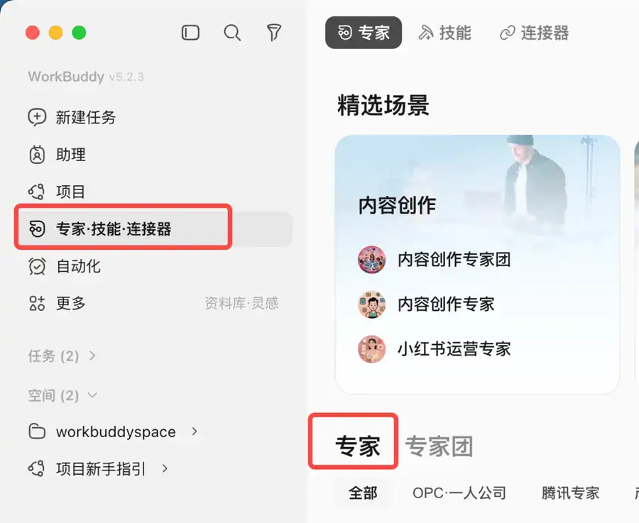
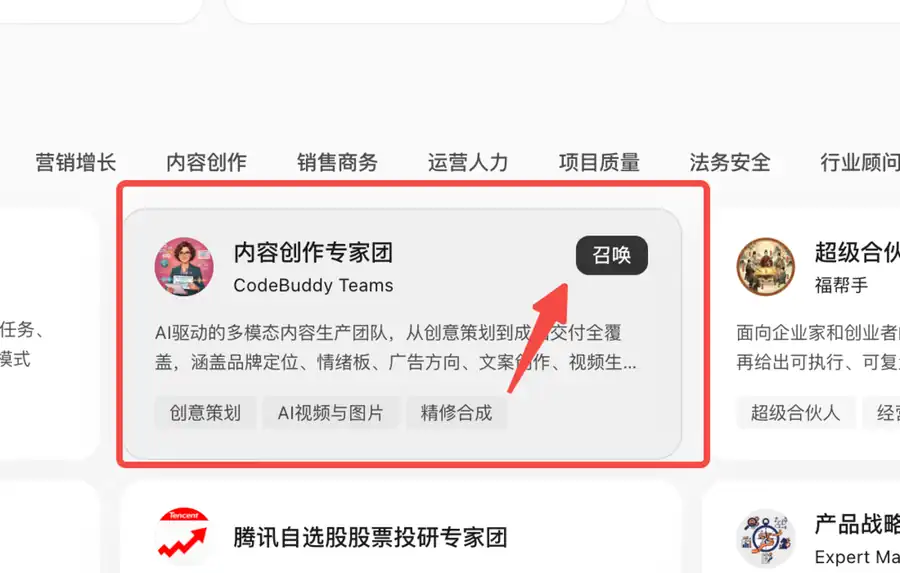
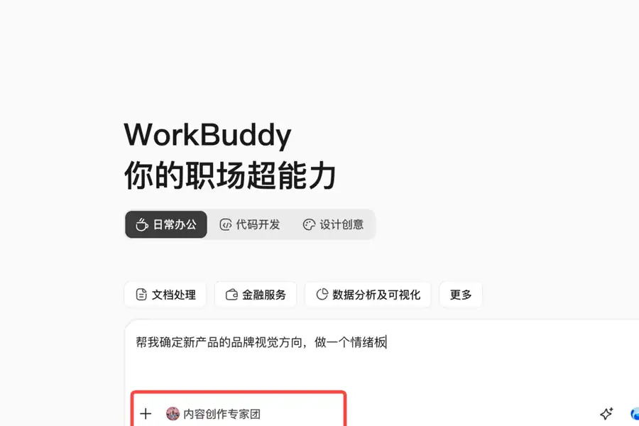
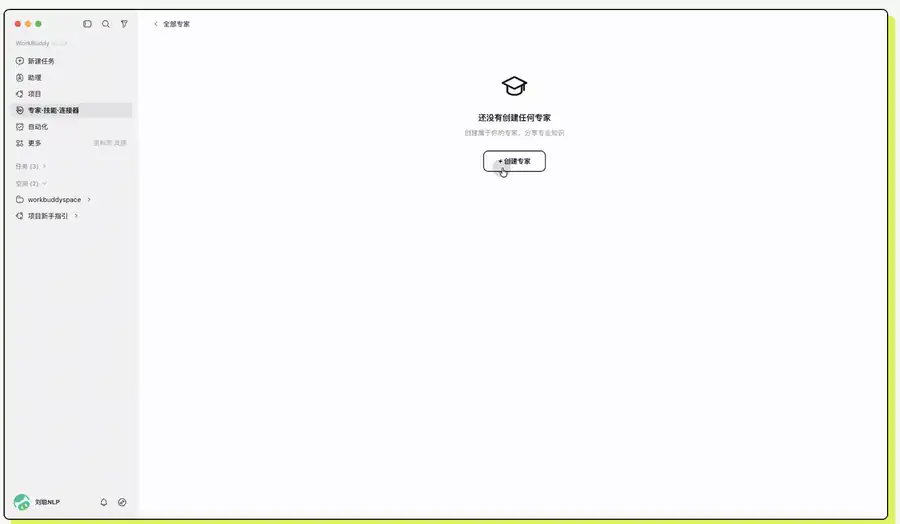

概念 1｜专家：带着固定职责和方法做事
概念： 专家不是“更会聊天”的称号，而是预先设置了角色、方法和适用任务的AI助手。
例子： 内容创作专家更适合写文案，数据分析专家更适合整理数据；名称再厉害，也不会自动知道你没有提供的活动时间。

想一想： 给AI加上“资深”两个字，能保证它写出的活动时间准确吗？
参考答案：点击展开
不能。时间是否准确取决于输入材料和人工核对，不取决于角色名称。
第二章 · 第9次课 · 2学时
上节课我们给智能体装上了 Skill 操作手册，掌握了通过标准技能规范约束 AI 执行特定动作，确保输出结果符合预期。
09_新品品牌情绪板_姓名.docx
文档必须含：产品材料、专家团名称与分工记录、一张情绪板、视觉方向说明、人工核对表。
概念： 专家不是“更会聊天”的称号，而是预先设置了角色、方法和适用任务的AI助手。
例子： 内容创作专家更适合写文案，数据分析专家更适合整理数据；名称再厉害，也不会自动知道你没有提供的活动时间。

想一想： 给AI加上“资深”两个字，能保证它写出的活动时间准确吗？
不能。时间是否准确取决于输入材料和人工核对，不取决于角色名称。
概念： 专家团由一个负责人理解总任务、拆分子任务、安排成员处理，再把结果合成一个最终成果。
例子： 宣传方案可拆成“提取活动事实、设计宣传重点、撰写正文、检查遗漏”；各环节结果最后必须合并成一份方案。
记住： 只有任务包含多个不同环节时，专家团才比单个专家更有价值。

想一想： 只把一句话改顺，是否一定要用专家团？
不一定。简单单步任务用普通对话或单个专家更省事；多环节协作任务才考虑专家团。
概念： 专家团负责分工和生成，人负责提供可信材料、规定不能猜的内容，并按标准验收最终结果。
例子： 材料没有奖项和报名费，方案就必须写“未提供”，不能为了吸引人自行新增一等奖或收费金额。
拆任务、整理重点、写草稿、给出检查建议。
时间、地点、费用、隐私、是否可发布和最终取舍。
想一想： 专家团给出很完整的方案，但多写了“前50名送礼品”，能直接采用吗？
不能。材料中没有这项事实，应删除并记录为“AI新增了无依据内容”。
对象：参加顶岗实习面试的学生；时间：9月18日14:00；地点：实训楼A205；携带：简历2份、学生证；提前15分钟到场；材料未提供着装、交通补贴和联系人。
请参加顶岗实习面试的同学于9月18日13:45前到实训楼A205，携带简历2份和学生证。着装、交通补贴及联系人信息尚未提供，请等待后续通知。
“请穿正装”“学校报销车费”“联系王老师”等材料中没有的内容，即使表达看起来合理也要删除。

软件： WorkBuddy。打开“专家·技能·连接器”→“专家”→“我的专家”，选择“创建专家团”。本课把三种专家角色一起写进创建说明，让工具生成团队及对应成员；不需要手工编写配置文件。

请帮我创建并注册一个专家团，名称为“轻行品牌视觉专家团”，用于大学生课堂的模拟新品视觉设计。 请生成团队及对应专家成员，明确以下三个角色： 1. 团长／品牌策划专家：读取用户提供的产品材料，明确目标人群和希望传达的感觉；先提出计划，等待用户确认，再分配任务并汇总成果。 2. 视觉设计专家：确定3个风格关键词、3种配色与色号、至少3张参考画面及文字风格，生成一张情绪板；没有出图能力时提供完整制图提示词并如实说明。 3. 质量检查专家：逐项检查图文与材料是否一致，有无乱码、遗漏、无依据的性能或认证；把问题反馈给团长修改。 协作顺序：团长出计划→用户确认→视觉设计→质量检查→团长汇总。最终只交一张情绪板和100字以内的方向说明。 统一规则：仅使用用户提供的产品事实，不冒充真实职业经历，不自动公开发布，不新增价格、材质、容量、保温时长或认证。 请完成创建与注册，说明实际生成的成员、职责和调用方法；如果当前版本无法创建专家团，请明确告知，不要用一段角色聊天冒充注册成功。
软件： WorkBuddy。在“我的专家”找到“轻行品牌视觉专家团”，打开详情并召唤，确认输入框附近显示你刚创建的团队名称。
先读下面的新品材料，再复制完整任务到这个团队的输入框中发送。
品牌：轻行 新品：随身水杯 对象：喜欢运动、日常上课的大学生 使用场景：教室、运动场、校园散步 希望传达：清爽、轻松、有活力 参考方向：薄荷绿、奶白色；简洁、明亮 未提供：售价、容量、材质、保温时长、环保认证 边界：不出现真实品牌标志；不宣传未提供的产品性能 任务：先提出视觉设计计划，经我确认后制作一张情绪板。
情绪板是什么？ 把配色、参考图片、材质感觉和文字风格放在一张图上，让别人一眼看懂品牌想传达的感觉。它不是已经上市的产品广告。
帮我确定新产品的品牌视觉方向，做一个情绪板。 请使用当前已召唤的“轻行品牌视觉专家团”，按创建时设定的分工先给出简短计划，暂不生成最终图：说明需要完成哪些工作、如何分工，并提出一个适合下面产品的视觉方向。 【课堂模拟产品】 品牌：轻行；新品：随身水杯。 对象：喜欢运动、日常上课的大学生。 场景：教室、运动场、校园散步。 希望传达：清爽、轻松、有活力。 参考方向：薄荷绿、奶白色；简洁、明亮。 未提供：售价、容量、材质、保温时长、环保认证。 不要补造这些产品事实，不出现真实品牌标志。 最终成果限定为一张情绪板和100字以内的方向说明。 情绪板应含：3个风格关键词、3种配色（附色号）、至少3张参考画面、字体或文字风格示意。 参考画面围绕水杯、校园、运动；注明参考图不代表真实产品。 如果无法生成图片，请明确说明，先输出完整布局与制图提示词，不要声称图片已经完成。
发送一次完整任务，等待团长先给计划，暂不要求出图。
先等团长回复，不重复发送任务。检查三件事：对象是不是大学生？方向是不是清爽、轻松、有活力？三个角色的分工是不是不同？
如果计划偏离材料，直接指出“对象、风格或分工哪里不对”，请团长修改。不要一边改方向一边要求出图。
先检查：是不是大学生水杯？是不是清爽有活力？有没有编造售价或性能？不符合就先要求修改计划，符合后再发送下面内容。
请按已确认的方向生成一张品牌情绪板。 采用清楚的单张布局，展示风格关键词、配色与色号、参考画面、文字风格，并注明“课堂模拟／视觉参考，非真实产品广告”。 另附100字以内说明：这些颜色与画面为什么适合这款大学生随身水杯。 不新增售价、容量、材质、保温时长或环保认证。 完成后告诉我如何保存图片；无法出图时请明确告知。
软件： WorkBuddy + WPS。新建WPS文档，写下“产品材料、专家团与分工、情绪板、方向说明、人工核对”五个标题，记录本次材料及实际生成的成员分工，保存为 09_新品品牌情绪板_姓名.docx。等负责人汇总后，保存图片，再在WPS“情绪板”标题下用“插入→图片”放入；把说明放在图片下方。
| 检查项 | 完成标准 |
|---|---|
| 产品一致 | 围绕大学生随身水杯，不跑成食品或化妆品。 |
| 风格明确 | 3个关键词表达清爽、轻松、有活力，画面与说明一致。 |
| 视觉要素齐全 | 3种配色与色号、至少3张参考画面、文字风格示意清楚可辨。 |
| 没有补造事实 | 不出现未提供的价格、容量、材质、保温或认证；标明模拟与参考。 |
| 成果可查看 | WPS包含材料、专家团与实际分工、一张情绪板、说明、核对记录；文件重开可见图片。 |
每项写“通过”或“需修改”。需要修改时，指出具体问题再要求AI调整；把一处修改前后记录到“人工核对”。五项通过后保存文档。
09_新品品牌情绪板_姓名.docx。只交这一份文档，图片嵌在文档里。| 我的作品 | 文件里应有 | 提交前检查 |
|---|---|---|
| 新品品牌情绪板 | 产品材料 专家团与实际分工 一张情绪板 方向说明 人工核对记录 | □ 自建专家团能找到并召唤 □ 记录实际工具与分工 □ 图片与产品、风格一致 □ 不补造产品性能 □ 五项检查通过 □ 文件重开后图片可见 |
下节预告： 下节课我们将学习文档对比核验，让 AI 找出两版方案之间的细微差异。
返回页面顶部 ↑